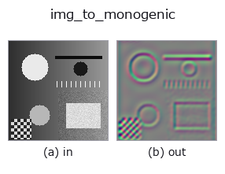

bridge op• 資料種類:image → qimage
• 呼叫:fullseye.apply(img, "img_to_monogenic", a=0.5, b=0.5)(2-D 的模型是一張圖 + 兩個純量旋鈕 a,b∈[0,1])

*圖為在 128×128 合成輸入上實際執行的輸出。左為輸入，右為輸出。點雲以俯視散點顯示(亮度 = z)，一維序列為折線，體資料為沿 z 的最大值投影，影片為中間影格，複數影像為振幅；無法成像的回傳值直接顯示數值。*
掃描旋鈕 a(0.1 / 0.5 / 0.9，另一旋鈕取預設):
▸ img_to_monogenic: knob a sweep (docs site)
掃描旋鈕 b(0.1 / 0.5 / 0.9，另一旋鈕取預設):
▸ img_to_monogenic: knob b sweep (docs site)
換別的影像(合成場景 / 照片 / 硬幣。上排為輸入，下排為對應輸出。旋鈕取預設):
▸ img_to_monogenic: other inputs (docs site)
*第 4 欄是彩色 (H,W,3) 輸入。此運算子能正確處理顏色而不跨通道(不把顏色通道當作第三個空間軸摺積)。*
產生影像的單尺度單演訊號(四元數場 (H,W,4)，sort `qimage`)。
> 以下的詳細說明為原文 —— 摘要與標題已翻譯。
台帳の `monogenic_signal`(Felsberg & Sommer 2001)そのもの: 対数放射状の
raised-cosine 帯域通過を掛け、その Riesz 対と組にして四元数
`(帯域通過像, R1, R2, 0) に詰める。tb_monogenic_amplitude` /
`tb_monogenic_phase / tb_monogenic_orientation` は **この形の qimage
だけ** を受け付ける(色の四元数 `tb_rgb_to_quaternion` を渡すと
「モノジェニック信号ではない」と拒否する)ので、その族の入口はこちら。
• `a → 中心波長 wavelength_px = 8 * (0.25 + 1.75 * a)` 画素
(a=0.5 で 9 px。小さいほど細かい構造に応答)。
• `b → 帯域幅 bandwidth_octaves = 1.0 * (0.25 + 1.75 * b)` オクターブ
(b=0.5 で 1.125)。
• 返り値: `(H, W, 4)` float64。値域は入力に依存し [0,1] に収まらない
(Riesz 対は符号つき)。
• 範例資料目錄(下載 URL / 授權) —— 2-D 用 skimage.data(BSD/公有領域)加合成圖,3-D 給出真實資料源(Stanford/PDS 等)的下載 URL。
• 運算子來歷與參考文獻 —— 該運算子族所依據的研究/方法出處。
• 演算法的正典(作者・年份)與用途見上面的族使用指南。
下面的程式已確認可以執行(與圖相同的輸入)。在 Studio 說明中，此區塊會變成按鈕，可當場載入並執行。
img_to_monogenic 0.50 0.50
▸ Load this pipeline · Load & run
• gallery2d_bridge — py -3.11 examples/gallery2d_bridge.py
qimage 作為輸入)identity · tb_quaternion_to_rgb · tb_quat_norm · tb_quat_conjugate_image · tb_quat_normalize_image · tb_monogenic_amplitude · tb_monogenic_phase · tb_monogenic_orientation
bridge)img_to_points · img_to_keypoints · img_to_signal · img_to_counts · img_to_matrix · img_to_video · img_to_volume · img_to_lightfield
*Provenance: ops.py — 2D 運算子登記表。本條目由 tools/opdocs.py md 自動產生(請勿手動編輯)。*
© 2026 Kazufumi Furuse — Fullseye operator documentation. Licensed under Apache-2.0.
{kind=link}
{kind=link}
{kind=link}